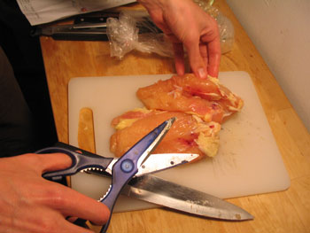

Whole Chicken Breasts
Inspired by Cook’s Illustrated, I decided to try buying a whole chicken breast and to butcher it myself. This is no small task, but the results were fantastic, and I don’t think I’ll buy another boneless skinless breast any time soon.
I’m dying for a cleaver for tasks like these, but my chef’s knife worked alright. It took less than a minute to saw through all that bone and cartilage, and another minute or two to cut away the rib meat and bloody bits and hard parts (kitchen shears are somewhat of a must). The result was two nicely shaped, succulent chicken breast halves.
{kind=link}

I browned the meat on both sides for a few minutes and then stuck my skillet in the oven for about 15 minutes. My instant thermometer read about 140º in the fattest part of the breast. I made a quick sauce of onions, vermouth, chicken broth and thyme, and I accompanied the meat with a side of lousy mashed potatoes that I’d rather just forget all about.
Whole chicken breasts compared to the boneless skinless variety is like steak next to a fast food hamburger. Unlike with beef, though, a whole chicken breast costs about $2.50 a pound, compared to upwards of $6 a pound for a sloppily butchered one. The choice is clear!
Comments
i need a tutorial on how to do that.. how did the practicing go last night?
Anytime honey! It was easy and fun, although slightly messy.
wow… very ambitious of you. i had to that the other day because a certain un-boyfriend bought chicken that had all its bits, only i had to use a crappy knife and no kitchen shears :( chicken is icky to touch…
Add a comment